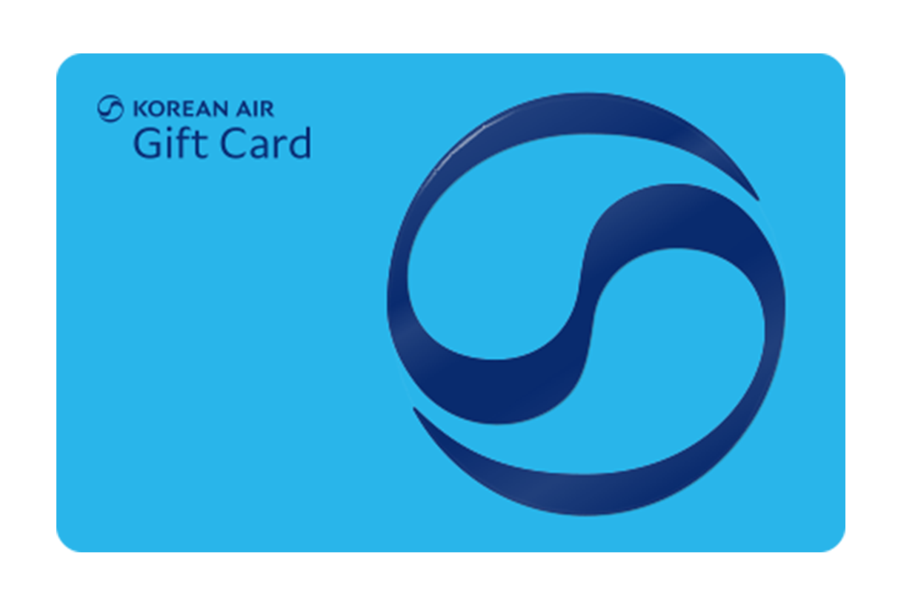
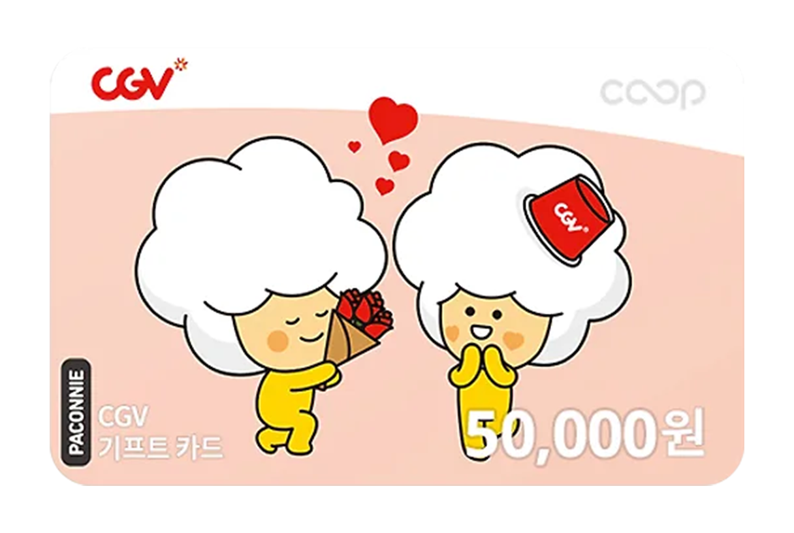
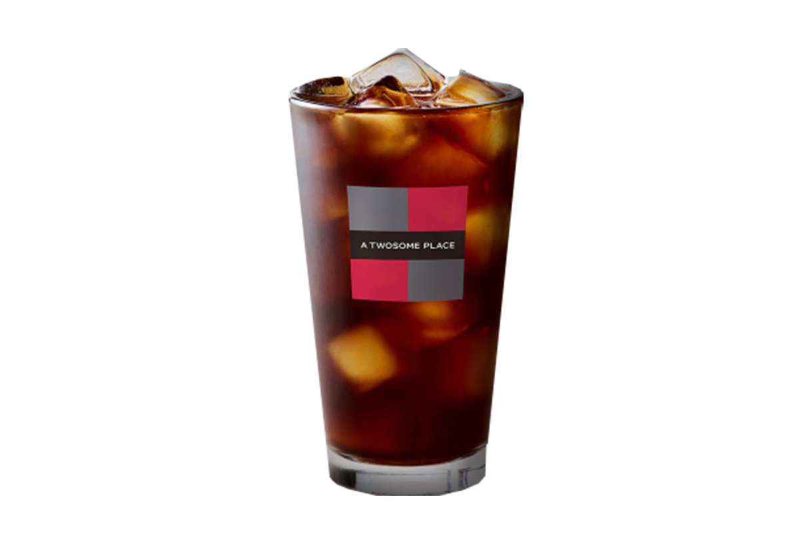

神社 · 囁キ · 運命 · 御神籤
신사 · 속삭임 · 운명 · 오미쿠지
✦ 2026 · 6월 17일 CGV 대개봉 ✦

神社 : 悪鬼ノ囁キ
무언가 들리기 시작했다
눈을 감고 마음속으로
오늘의 물음을 품으세요
御神籤
상자를 클릭하면 운세가 뽑힙니다
▼
고베 항공권 이벤트 참여하기
▼
✦ 일 본 여 행 항 공 권 추 첨 이 벤 트 ✦
오미쿠지로 오늘의 운세 확인하고
일본 고베 항공권 받자!
1명
일본 고베 항공권

항공사 기프트카드
100만원권
5명
CGV 기프트카드

기프트카드
5만원권
10명
CGV 영화관람권
영화관람권
2매
84명
투썸 아메리카노

기프티콘
아메리카노 R
← 돌아가기
No.001
大吉
Daikichi · 대길
● 신사지인 · 神社之印 ●
〈 신사 : 악귀의 속삭임 〉
상세 운세 · 詳細運勢
總
총운
總運 · Overall
財
재물운
財運
縁
연애운
愛情運
命
건강운
健康運
業
직업운
職業運